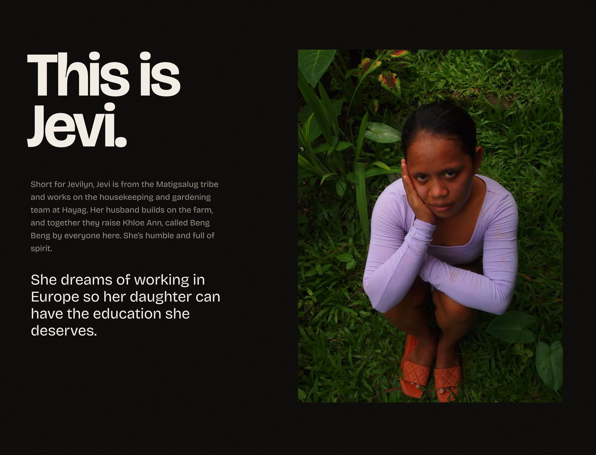
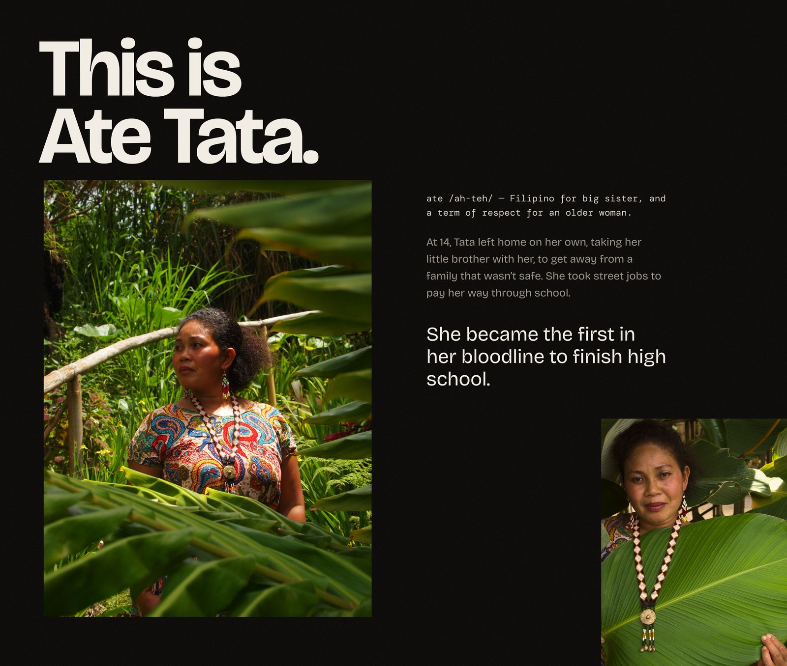
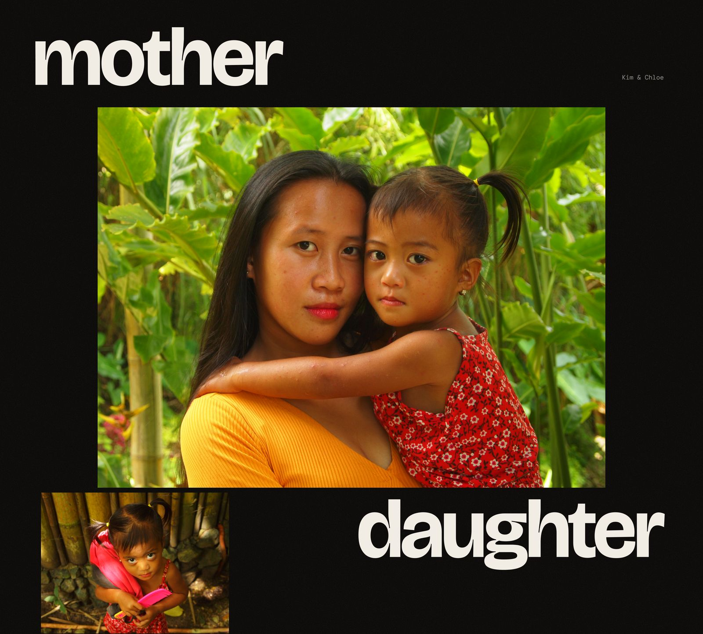
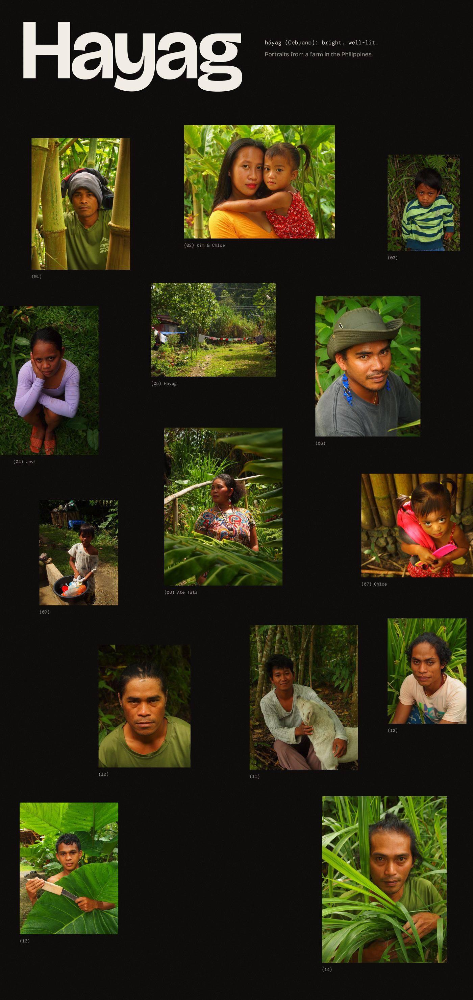

Hayag Bamboo Farm
The people behind the bamboo
The brief
A bamboo farm in Davao City with a close-knit team and a strong bond with the local indigenous community. The website and socials needed a clearer direction, and the people behind the farm deserved a bigger spotlight.
What I did
- Audited the website and social channels and mapped out what to improve
- Built a content strategy to give the farm a clear, consistent voice online
- Shot and wrote a portrait series on the people behind the farm, like Jevi from the Matigsalug tribe, who dreams of giving her daughter the education she deserves



Chapters from the portrait series · click a photo to open it

“Lilia is really kind, hardworking and generous, especially to our community. Her joyful and warm energy is really contagious. We are really grateful to her for assessing and working on improvements for our website and social media accounts. She also led a beautiful photography project with our indigenous community, telling the stories of the people behind the farm. Would really recommend her! Thank you, Lilia!”